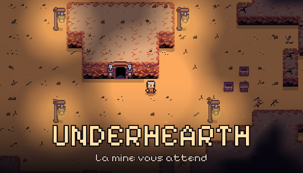
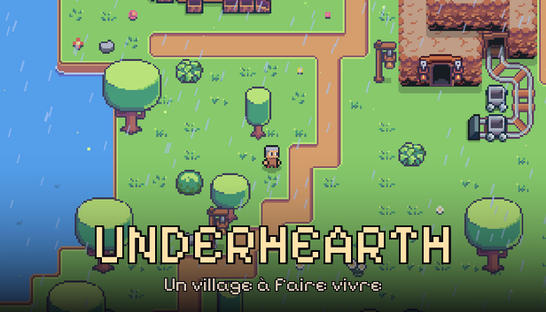
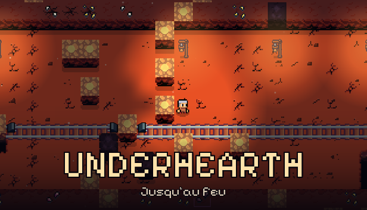
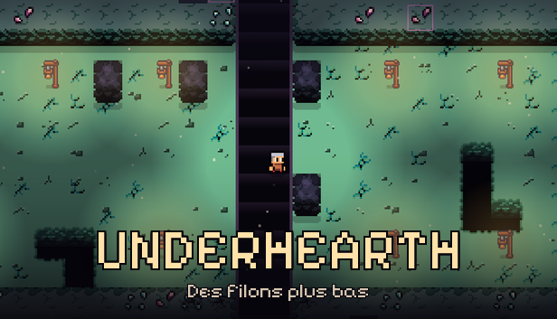

Creuse une mine infinie, strate après strate. Récolte, améliore ton équipement, bâtis l'atelier ultime — et découvre ce qui dort tout en bas.
Ton village, ta base
Reviens à la surface pour vendre ton minerai, retrouver tes compagnons et investir dans du meilleur matériel avant de replonger.
Chaque coup de pioche compte
Une mine générée sans fin, tap après tap : terre, pierre, granite... chaque strate cache ses propres richesses et ses propres dangers.
Toujours plus loin
Plus tu descends, plus la mine se fait mystérieuse. Des secrets enfouis n'attendent que d'être découverts par les plus téméraires.
La richesse ultime
Au bout du voyage, des veines de cristal et un filon de trésors capables de financer la mine de tes rêves.
Trois envies, une seule pioche
Underhearth est construit autour de ce que tu as vraiment envie de ressentir en creusant.
Devenir riche en creusant
Chaque profondeur rapporte plus que la précédente. Ton minerai devient ton empire.
Construire la mine ultime
Rails de wagonnet, raffinerie, pompe à air, sismographe, foreuse automatique, rat compagnon — un atelier entier à faire évoluer.
Découvrir des secrets enfouis
Veines rares, butins cachés, recoins qu'on ne trouve qu'en creusant là où personne ne regarde.
Un arbre de talents profond
Trois branches, dix rangs chacune : façonne ton style de mineur, de la vitesse pure à l'efficacité économique.
Des mineurs à commander
Recrute des aides autonomes qui creusent pour toi pendant que tu explores plus profond encore.
Creuse entre amis
Mode coopératif en ligne avec chat vocal de proximité — explorez la même mine, ensemble.
Un monde à creuser




Ta pioche t'attend.
Underhearth arrive bientôt. Ajoute-le à ta liste de souhaits pour ne pas rater le lancement.
Ajouter à ma liste de souhaits